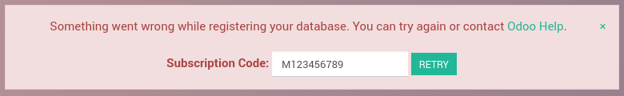
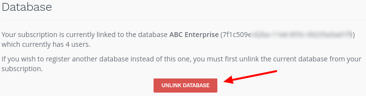
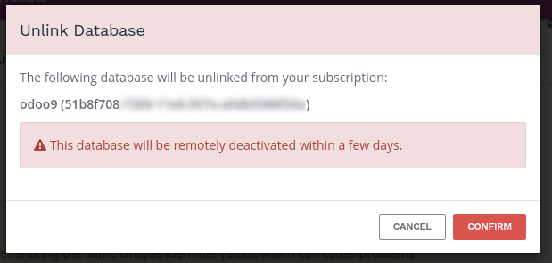
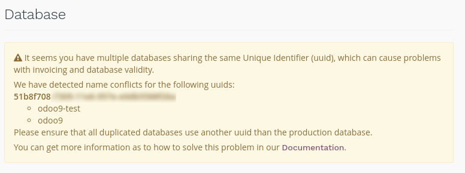
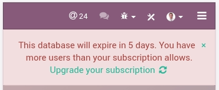
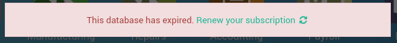
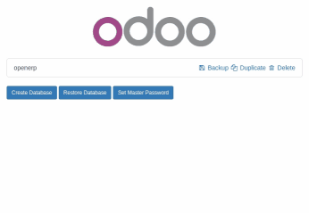

Register a database
To register your database, you just need to enter your Subscription Code in the banner in the App Switcher. Make sure you do not add extra spaces before or after your subscription code. If the registration is successful, it will turn green and will provide you with the Expiration Date of your freshly-registered database. You can check this Epiration Date in the About menu (Odoo 9) or in the Settings Dashboard (Odoo 10).
Registration Error Message
If you are unable to register your database, you will likely encounter this message:
Solutions
Do you have a valid Enterprise subscription?
- Check if your subscription details get the tag "In Progress" on your Odoo Account or with your Account Manager
Have you already linked a database with your subscription reference?
- You can link only one database per subscription. (Need a test or a development database? Find a partner)
You can unlink the old database yourself on your Odoo Contract with the button "Unlink database"
A confirmation message will appear; make sure this is the correct database as it will be deactivated shortly:

Do you have the updated version of Odoo 9?
- From July 2016 onward, Odoo 9 now automatically change the uuid of a duplicated database; a manual operation is no longer required.
If it's not the case, you may have multiple databases sharing the same UUID. Please check on your Odoo Contract, a short message will appear specifying which database is problematic:
In this case, you need to change the UUID on your test databases to solve this issue. You will find more information about this in this section.
For your information, we identify database with UUID. Therefore, each database should have a distinct UUID to ensure that registration and invoicing proceed effortlessly for your and for us.
Error message due to too many users
If you have more users in your local database than provisionned in your Odoo Enterprise subscription, you may encounter this message:
When the message appears you have 30 days before the expiration. The countdown is updated everyday.
Solutions
- Add more users on your subscription: follow the link and Validate the upsell quotation and pay for the extra users.
or
- Deactivate users as explained in this Documentation and Reject the upsell quotation.
Once your database has the correct number of users, the expiration message will disappear automatically after a few days, when the next verification occurs. We understand that it can be a bit frightening to see the countdown, so you can force an Update Notification to make the message disappear right away.
Database expired error message
If your database reaches its expiration date before your renew your subscription, you will encounter this message:
This blocking message appears after a non-blocking message that lasts 30 days. If you fail to take action before the end of the countdown, the database is expired.
Solutions
- Renew your subscription: follow the link and renew your subscription - note that
- if you wish to pay by Wire Transfer, your subscription will effectively be renewed only when the payment arrives, which can take a few days. Credit card payments are processed immediately.
- Contact our Support
None of those solutions worked for you? Please contact our Support
Force an Update Notification
Update Notifications happen once every 7 days and keep your database up-to-date with your Odoo Enterprise subscription. If you modify your subscription (i.e. add more users, renew it for a year, etc.), your local database will only be made aware of the change once every 7 days - this can cause discrepancies between the state of your subscription and some notifications in your App Switcher. When doing such an operation on your subscription, you can force an Update using the following procedure:
- Connect to the database with the Administrator account
- Switch to the Developer mode by using the About option in the top-right menu (in V9) / in Settings (in V10): click on Activate the developer mode
- Navigate to the "Settings" menu, then "Technical" > "Automation" > "Scheduled Actions"
- Find "Update Notification" in the list, click on it, and finally click on the button "RUN MANUALLY"
- Refresh the page, the "Expiration" notification should be gone
Предупреждение
You may have kept the same UUID on different databases and we receive information from those databases too. So please read this documentation to know how to change the UUID. After the change you can force a ping to speed up the verification, your production database will then be correctly identified.
Duplicate a database
You can duplicate your database by accessing the database manager on your server (<odoo-server>/web/database/manager). In this page, you can easily duplicate your database (among other things).
When you duplicate a local database, it is strongly advised to change the duplicated database's uuid (Unniversally Unique Identifier), since this uuid is how your database identifies itself with our servers. Having two databases with the same uuid could result in invoicing problems or registration problems down the line.
Примечание
From July 2016 onward, Odoo 9 now automatically change the uuid of a duplicated database; a manual operation is no longer required.
The database uuid is currently accessible from the menu Settings > Technical
> System Parameters, we advise you to use a
uuid generator or to use the unix command
uuidgen to generate a new uuid. You can then simply replace it like any
other record by clicking on it and using the edit button.